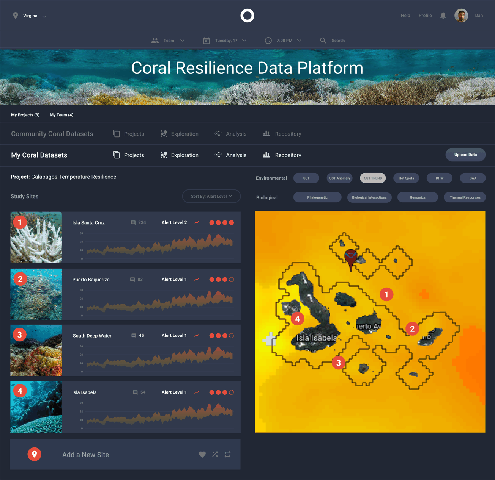
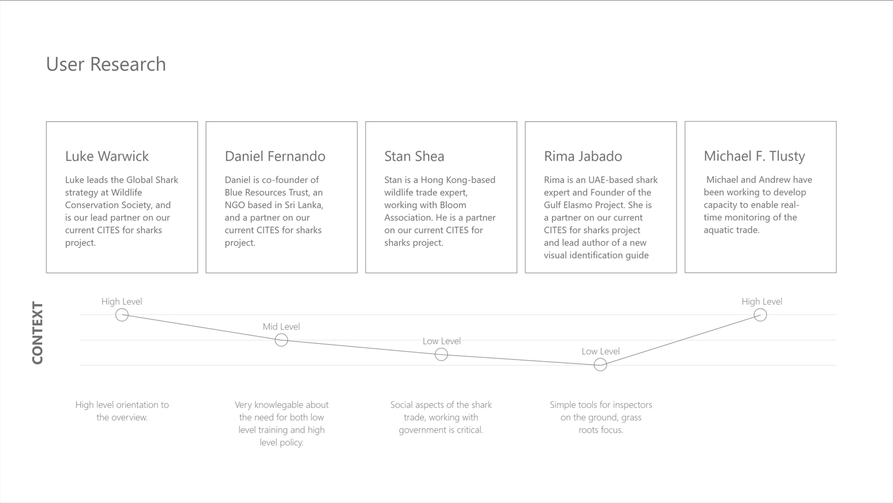
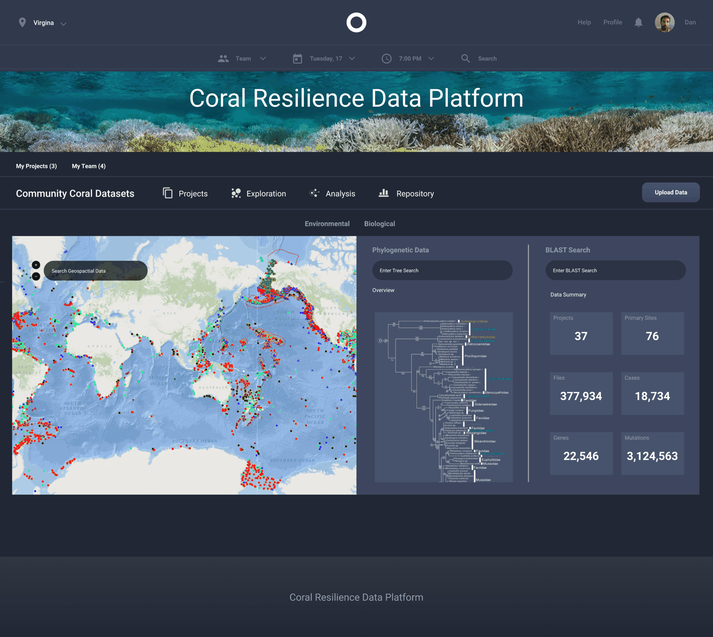

Coral Resilience Data Platform
Collect, analyse and visualise coral reef health for researchers, conservationists and policymakers. The research question that decided the whole architecture was not what the data should show. It was who needed it at which altitude.

The problem
The same data, needed at four different altitudes
Marine conservation runs on a dataset that has to serve people who could not be further apart. A policymaker needs one defensible number and a map. A geneticist needs the phylogenetic tree and a sequence search. A field inspector needs something simple enough to use standing on a dock.
Build for the middle of that range and you build a tool nobody uses. The policymaker finds it unreadable, the researcher finds it shallow, and the inspector never opens it.
So the research was not about features. It was about resolution.
The research
Five experts, four countries, one ladder
I interviewed five domain experts working in marine conservation and the international wildlife trade, and plotted each of them on a context ladder rather than writing personas.
High level orientation to the overview. Leads global shark strategy; needs the shape of the picture, not the rows underneath it.
Very knowledgeable about the need for both low level training and high level policy. The rung that proved the ladder had to be continuous, not two products.
Social aspects of the trade; working with government is critical. Detail, in context, with the politics attached.
Simple tools for inspectors on the ground, grass roots focus. Lead author of a visual identification guide, so the bar for “simple” was set by someone who had already built one.
Building capacity for real-time monitoring of the aquatic trade. Cares about the feed and the flow, not any single record.

Plotted, the five experts do not cluster. They fall into a U: high, mid, low, low, high. That shape is the entire argument for the architecture. There is no single default view that serves this group, and there is no clean split into “expert mode” and “simple mode” either, because Daniel sits in the middle and needs to move between both.
A persona deck would have produced three archetypes and hidden that. The ladder made it impossible to ignore.
They did not need different data. They needed different altitudes over the same data.
The architecture
One dataset, two doors
The ladder resolved into a platform with a shared spine and two entry points, so a user can start at their own altitude and climb in either direction without changing tools.

Community datasets. The whole shared corpus. A global map to orient, then phylogenetic and sequence search for people who came to dig.
My datasets. One project, a handful of study sites, alert levels and trend lines. The working view for the person collecting the data.
The shared spine. Projects, Exploration, Analysis, Repository. Same four words in both doors, so moving between them costs nothing.
The study-site row is where the ladder shows up most concretely. Each site carries a photograph, a named location, an alert level and a sparkline, in that order. The photograph and the alert level answer the low-altitude question in under a second. The sparkline answers the mid-altitude one. The click answers the rest.
Nothing is hidden behind a mode switch. The resolution is stacked inside the row.
The vocabulary
Two filter families, named the way the field names them
Filters are an information architecture decision disguised as a UI control. These are split the way the science is split, and they use the field’s own abbreviations rather than friendlier invented ones.
Environmental
Biological
Degree heating weeks and bleaching alert areas are not friendly terms. They are also the terms every person in this study already uses, in papers and in the field. Translating them would have made the platform easier for someone who was never going to use it and harder for everyone who was.
What I take from it
Plot the users before you segment them
The useful move on this project cost about an hour: instead of sorting five interviews into personas, I put them on one axis and looked at the shape. The shape was a U, and a U cannot be served by a default view or by a two-mode split.
Segmentation decides the answer before you have looked. Plotting lets the answer be surprising.
Have one dataset and several audiences who disagree about it?
This is the research that decides the architecture, before anyone draws a screen. Tell me who has to use it.
Start the conversation